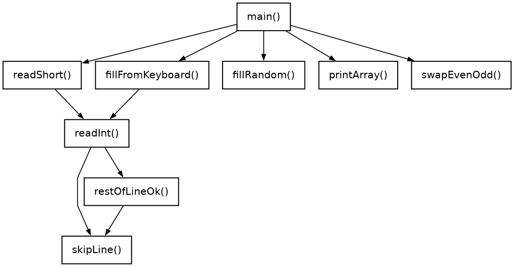
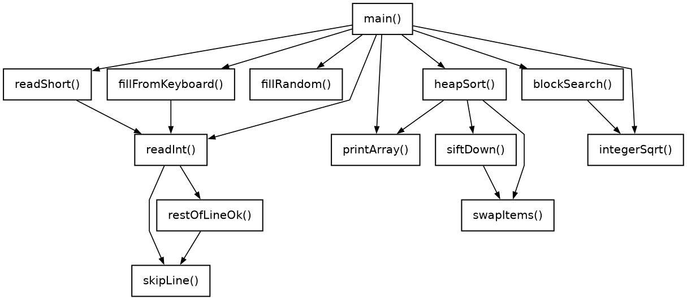
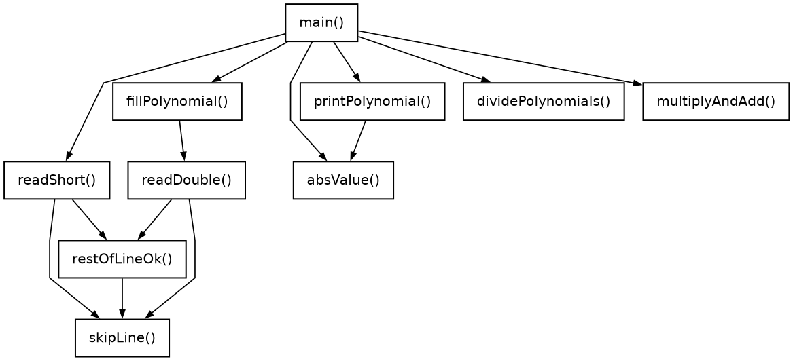

← До переліку лабораторних робіт
Лабораторна робота №6. Одновимірні масиви
Варіант 19. Виконав: Одарчук Олексій, КНУ імені Тараса Шевченка, ФІТ, група ІПЗ-11. C17, gcc
1. Мета роботи
- Ознайомитися з особливостями типу масиву.
- Опанувати технологію застосування масивів даних.
- Навчитися розробляти алгоритми та програми із застосуванням одновимірних масивів.
2. Умова задачі
Завдання 1 (19.1) - базові операції обробки масивів
Створити одновимірний масив, кількість елементів якого ввести з клавіатури. Передбачити меню вибору способу створення масиву: введення з клавіатури або генерація псевдовипадкових чисел. Поміняти місцями елементи, що мають парні індекси, з елементами, які мають непарні індекси. Надрукувати отриманий масив.
Завдання 2 (19.2) - алгоритми сортування та пошуку
Створити одновимірний масив, кількість елементів якого ввести з клавіатури. Передбачити меню вибору способу створення масиву: введення з клавіатури або генерація псевдовипадкових чисел. Відсортувати масив за алгоритмом пірамідального сортування (Heapsort) [1.8] та здійснити пошук в масиві за алгоритмом блочного пошуку [2.10]. Передбачити виведення проміжних результатів в процесі виконання ітерацій сортування масиву. Загальні вимоги до завдання 2: визначити ефективність методу сортування (кількість порівнянь та обмінів) і методу пошуку (кількість порівнянь); передбачити вибір режиму виведення результатів: тільки відсортований масив або з проміжними ітераціями.
Завдання 3 (19.3) - многочлени
Увести з клавіатури цілі числа n, m (n > m), що є степенями двох многочленів, n > 2, m > 2. Увести або згенерувати у вказаному діапазоні коефіцієнти многочленів:
n m
f(x) = Σ aᵢ·x^(n-i) , g(x) = Σ bᵢ·x^(m-i)
i=0 i=0
Значення деяких коефіцієнтів можуть дорівнювати нулю. Визначити і вивести частку від ділення f(x) на g(x), використовуючи схему Горнера [3.5], та остачу від ділення. Здійснити перевірку результату, визначивши добуток частки на дільник з додаванням остачі.
Обмеження умови: забороняється використовувати STL, шаблон
std::vector, а також бібліотечні методи сортування та пошуку. Застосування
покажчиків, динамічних масивів, операторів new/delete у
лабораторній роботі №6 не схвалюється.
3. Аналіз задачі та теоретичне обґрунтування
Завдання 1
Обмінюються сусідні пари: a[0]↔a[1], a[2]↔a[3] і так далі. Цикл іде з кроком 2 за умови
i + 1 < n; при непарній кількості елементів останній лишається на місці,
про що програма повідомляє.
Завдання 2. Пірамідальне сортування
Купа (heap) - це масив, який трактується як майже повне бінарне дерево: нащадками елемента
з індексом i є елементи з індексами 2i+1 та 2i+2.
Властивість незростаючої купи: значення батька не менше за значення кожного з нащадків,
тому максимум завжди в корені (індекс 0).
Алгоритм складається з двох фаз:
-
Побудова купи. Просіювання вниз (
siftDown) виконується для всіх внутрішніх вузлів, відn/2 - 1до кореня. -
Вилучення максимумів. Корінь (найбільший елемент) міняється місцями з останнім
елементом невідсортованої частини, розмір купи зменшується на одиницю, а новий корінь
просіюється вниз. Після
n-1таких кроків масив упорядковано за неспаданням.
Трудомісткість - O(n·log n) навіть у найгіршому випадку, додаткова пам'ять не
потрібна; недолік - нестійкість (рівні елементи можуть змінити взаємний порядок).
Завдання 2. Блочний пошук
Масив умовно поділяється на блоки завдовжки step. Спочатку переглядаються
лише останні елементи блоків: індекс збільшується кроком step, доки не буде
знайдено блок, останній елемент якого не менший за ключ. Далі всередині цього блоку
виконується послідовний пошук.
Оптимальна довжина блоку - √n. Обґрунтування: при довжині блоку
k потрібно приблизно n/k стрибків і до k порівнянь
усередині блоку, разом n/k + k. Ця сума мінімальна при k = √n і
дорівнює 2√n. Це оцінка порядку, а не точна межа: елемент на межі блоку
порівнюється двічі (у стрибку і в лінійному проході), тому для дуже малих масивів
кількість порівнянь може перевищити 2√n (наприклад, для трьох елементів і
ключа в кінці - 4 порівняння при 2√3 ≈ 3,5).
Довжина блоку - ціле число, тому обчислюється власною функцією integerSqrt():
sqrt() з math.h повертає double, який довелося б
округлювати з перевіркою похибки, а послідовне нарощування дає точну цілу частину кореня.
У завданні 3 єдина потрібна математична функція - модуль дійсного числа, який зводиться до
одного порівняння, тому реалізований функцією absValue(), і
math.h у цих програмах не підключається.
Блочний пошук повільніший за двійковий (O(log n)), але швидший за лінійний
(O(n)). Масив має бути впорядкованим, тому пошук виконується після
сортування.
Завдання 3. Ділення многочленів за схемою Горнера
Використано узагальнену схему Горнера (синтетичне ділення). Робочий масив ініціалізується коефіцієнтами діленого. На кожному кроці старший коефіцієнт робочого масиву ділиться на старший коефіцієнт дільника - це черговий коефіцієнт частки; потім із робочого масиву віднімається дільник, помножений на цей коефіцієнт і зсунутий на відповідну позицію:
q[i] = work[i] / b[0] work[i+j] = work[i+j] - q[i]·b[j], j = 0...m виконується для i = 0 ... n-m
Після n-m+1 кроків останні m коефіцієнтів робочого масиву
утворюють остачу, тож її степінь менший за степінь дільника.
Кількість операцій множення з відніманням - (n-m+1)·(m+1); степені
x не обчислюються.
Контроль коректності. Старший коефіцієнт дільника не може дорівнювати нулю, інакше
перший крок дав би ділення на нуль. Умова допускає нульові коефіцієнти, тому програма
перевіряє цей випадок. Коефіцієнти, введені з клавіатури, можуть бути будь-якими
скінченними дійсними числами, а межі діапазону генерації - цілі числа від -1000 до 1000
(функція readShort()); значення inf і nan, які
scanf вважає дійсними числами, відхиляються функцією
readDouble(), тож перевірка q·g + r = f не може пройти на
невизначених значеннях.
Вибір типів даних
| Змінні | Тип | Чому |
|---|---|---|
Завдання 1-2: кількість елементів n, індекси, лічильник обмінів
swaps, довжина блоку step, межі блоку, кількість блоків,
індекс знайденого ключа
|
short |
Не більше 1000 (MAX_SIZE); індекси нащадків у купі - до 2000, довжина
блоку - до 31, блоків - до 33.
|
Завдання 1-2: пункти меню, межі генерації low, high |
short |
Пункт меню 1..2, межі - від -10000 до 10000. |
Завдання 2: лічильники g_comparisons, g_swaps, порівнянь
при пошуку
|
unsigned short |
Для 1000 елементів сортування робить не більше 29 980 порівнянь і 14 490 обмінів, пошук - не більше 64 порівнянь; це менше за 65 535. |
Завдання 1-2: елементи масиву a, ключ пошуку key,
допоміжна змінна обміну
|
int |
З клавіатури можна ввести будь-яке число типу int; у
short (до 32 767) воно не вміститься.
|
Завдання 3: степені n, m, степінь частки, індекси
коефіцієнтів
|
short |
Не більше 20 (MAX_DEGREE). |
Завдання 3: пункт меню, межі генерації low, high |
short |
Пункт меню 1..2, межі - від -1000 до 1000. |
Завдання 3: допуски EPS, CHECK_TOLERANCE |
float |
Для сталої допуску точності float достатньо. |
Завдання 3: коефіцієнти a, b, q,
r, робочий масив work, масив перевірки check
|
double |
Кожен крок схеми Горнера віднімає добутки вже обчислених коефіцієнтів частки, і
похибка накопичується. З float частка на псевдовипадкових коефіцієнтах
відрізнялася вже в 7 значущих цифрах у більшості випадків, а для n = 20, m = 3 і
коефіцієнтів з [-1000; 1000] перевірка q·g + r = f не проходила
приблизно в 0,5 % випадків.
|
Завдання 3: maxQ, maxB, масштаб scale,
відхилення diff, maxDiff; функції absValue(),
readDouble()
|
double |
За типом коефіцієнтів: коефіцієнти частки можуть вийти за межі float, а
різниця двох double у float втратила б точність.
|
Числа для змінних типу short читає функція readShort(): вона
читає число в int і лише після перевірки меж записує його в
short. Формат %hd мовчки обрізав би завелике число (70000
перетворилося б на 4464), і воно пройшло б перевірку меж. Масиви b,
q, r мають рівно стільки елементів, скільки коефіцієнтів
можливо: MAX_DEGREE, MAX_DEGREE - 2 і
MAX_DEGREE - 1. Буфери запрошень розраховано на найдовший текст у UTF-8 разом
із '\0'.
Література: Ковалюк Т.В. Алгоритмізація та програмування. - Львів.: "Магнолія 2006", 2024. - 400 с.; Deitel P., Deitel H. C++ How to Program. Pearson Education, Inc. Hoboken, New Jersey. 2017. - 3015 p.; Knuth D. The Art of Computer Programming. Vol. 3. Sorting and Searching. 1998. - 792 p.; Thomas H. Cormen, Charles E. Leiserson, Ronald L. Rivest, Clifford Stein Introduction to Algorithms, Third Edition 2009. - 960 p.
4. Блок-схема алгоритму


HIPO-діаграма показує ієрархію викликів функцій: зверху головна функція main(), стрілки ведуть до функцій, які вона викликає, нижче - функції, що викликаються з них; петля біля функції означає рекурсивний виклик. Діаграму побудовано за текстом програми.



Схеми побудовано за текстами програм у rombik (rombik.app) відповідно до ДСТУ 19.701-90 (ISO 5807). Структура кожної схеми точно відповідає коду функції, а блоки описують дії словами, як у методичних вказівках, без фрагментів коду.
5. Текст програми
Завдання 1 - task1.c
/*==============================================================================
task1.c. Лабораторна робота №6. Завдання 1. Варіант 19.
Тема: одновимірні масиви, базові операції обробки.
Умова (таблиця 6.1, завдання 19.1): створити одновимірний масив, кількість
елементів якого ввести з клавіатури. Передбачити меню вибору способу
створення масиву: введення з клавіатури або генерація псевдовипадкових
чисел. Поміняти місцями елементи, що мають парні індекси, з елементами,
які мають непарні індекси. Надрукувати отриманий масив.
ОБМЕЖЕННЯ УМОВИ: забороняється використовувати бібліотеку стандартних
шаблонів STL і шаблон вектору std::vector. Застосування покажчиків,
динамічних масивів, операторів new, delete в лабораторній роботі №6
не схвалюється.
Виконав: Одарчук Олексій, КНУ імені Тараса Шевченка, ФІТ, група ІПЗ-11.
Компілятор: gcc -std=c17
==============================================================================*/
#include <stdio.h>
#include <limits.h>
#include <stdbool.h>
#include <ctype.h>
#include <stdlib.h>
#include <time.h>
/* Найбільша припустима кількість елементів масиву.
Межа масиву в мові C має бути сталим виразом часу компіляції,
а змінна з модифікатором const ним не є, тому розмір задано директивою
препроцесора. Кількість елементів та індекси не перевищують 1000, тому
для них достатньо типу short. */
#define MAX_SIZE 1000
/* Межі генерації псевдовипадкових чисел. Функція rand() гарантовано повертає
числа лише від 0 до 32767 (RAND_MAX у Visual Studio), тому ширина діапазону
high - low + 1 не повинна перевищувати 32768: інакше вираз
low + rand() % (high - low + 1) охопив би не всі значення діапазону.
Межі вміщуються в short, а елементи масиву лишаються int: з клавіатури
можна ввести будь-яке число типу int. */
#define MIN_RANDOM -10000
#define MAX_RANDOM 10000
//========= skipLine: відкинути залишок рядка введення разом із символом '\n' ==========
/*
skipLine - відкинути залишок рядка введення разом із символом '\n'.
*/
void skipLine(void)
{
int c = getchar(); //поточний символ введення
while (c != '\n' && c != EOF) //повторювати до кінця рядка
{
c = getchar(); //прочитати наступний символ
}
}
//======= restOfLineOk: перевірити залишок рядка після успішно прочитаного числа =======
/*
restOfLineOk - перевірити залишок рядка після успішно прочитаного числа.
Припустимі лише пропуски до кінця рядка або до наступного числа (так рядок
"1 2 3" читається як три значення трьома викликами readInt); будь-який
інший символ - помилка, і решта рядка відкидається.
Повертає : true - залишок рядка коректний; false - у рядку є сміття.
Локальні змінні:
c - поточний прочитаний символ.
*/
bool restOfLineOk(void)
{
int c = getchar(); //поточний прочитаний символ
while (c == ' ' || c == '\t' || c == '\r') //пропустити пробіли й табуляції
{
c = getchar(); //прочитати наступний символ
}
if (c == '\n' || c == EOF) //якщо рядок закінчився
{
return true; //повернути ознаку коректного рядка
}
if (isdigit(c) || c == '-' || c == '+') //якщо далі починається число
{
ungetc(c, stdin); //повернути символ у потік введення
return true; //повернути ознаку коректного рядка
}
skipLine(); //відкинути решту рядка
return false; //повернути ознаку помилки
}
//====== readInt: прочитати ціле число із заданого діапазону з контролем введення ======
/*
readInt - прочитати ціле число із заданого діапазону з контролем введення.
Параметри:
prompt [вхідний] - текст запрошення;
value [вихідний] - адреса змінної для введеного числа;
low, high [вхідні] - межі припустимого діапазону.
Повертає : true - число прочитано; false - вхідні дані вичерпано.
Локальні змінні:
scanned - результат спроби введення числа.
*/
bool readInt(const char *prompt, int *value, int low, int high)
{
for (;;) //повторювати до коректного введення
{
printf("%s", prompt); //вивести запрошення
const short scanned = scanf("%d", value); //результат спроби введення числа
if (scanned == EOF) //якщо вхідні дані вичерпано
{
return false; //повернути ознаку кінця даних
}
if (scanned == 0) //якщо введено не число
{
skipLine(); //не число: відкинути рядок цілком
}
else if (restOfLineOk() && *value >= low && *value <= high) //якщо все коректно
{
return true; //повернути ознаку успіху
}
//вивести повідомлення про помилку
printf("Помилка: потрібне ціле число від %d до %d.\n", low, high);
}
}
//=========== readShort: прочитати ціле число з 16-бітного діапазону (short) ===========
/*
readShort - прочитати ціле число з 16-бітного діапазону (short) з контролем введення.
Число читається функцією readInt у змінну типу int і лише після перевірки меж
записується в short: scanf("%hd") мовчки обрізав би завелике число
(70000 перетворилося б на 4464) і воно пройшло б перевірку меж.
Параметри:
prompt [вхідний] - текст запрошення;
value [вихідний] - адреса змінної для введеного числа;
low, high [вхідні] - межі припустимого діапазону.
Повертає : true - число прочитано; false - вхідні дані вичерпано.
Локальні змінні:
number - введене число до перевірки меж.
*/
bool readShort(const char *prompt, short *value, short low, short high)
{
int number = 0; //введене число до перевірки меж
if (!readInt(prompt, &number, low, high)) //якщо число не введено
{
return false; //повернути ознаку кінця даних
}
*value = (short)number; //число в межах low..high вміщується в short
return true; //повернути ознаку успіху
}
//======== fillFromKeyboard: заповнити масив значеннями, введеними з клавіатури ========
/*
fillFromKeyboard - заповнити масив значеннями, введеними з клавіатури.
Параметри:
a [вихідний] - масив, що заповнюється;
n [вхідний] - кількість елементів.
Повертає : true - масив заповнено; false - вхідні дані вичерпано.
Локальні змінні:
i - індекс елемента (до MAX_SIZE - 1);
prompt - запрошення для елемента.
*/
bool fillFromKeyboard(int a[], short n)
{
printf("Уведіть цілі числа (усього %hd):\n", n); //вивести запрошення до введення
for (short i = 0; i < n; ++i) //перебрати елементи масиву
{
char prompt[15]; //запрошення: до 14 символів (" a[-32768] = ") і '\0'
snprintf(prompt, sizeof prompt, " a[%hd] = ", i); //сформувати запрошення
if (!readInt(prompt, &a[i], INT_MIN, INT_MAX)) //якщо елемент не введено
{
return false; //повернути ознаку кінця даних
}
}
return true; //повернути ознаку заповнення масиву
}
//==== fillRandom: заповнити масив псевдовипадковими числами із заданого діапазону =====
/*
fillRandom - заповнити масив псевдовипадковими числами із заданого діапазону.
Параметри:
a [вихідний] - масив, що заповнюється;
n [вхідний] - кількість елементів;
low, high [вхідні] - межі діапазону значень.
Значення генеруються за формулою low + rand() % (high - low + 1).
*/
void fillRandom(int a[], short n, short low, short high)
{
for (short i = 0; i < n; ++i) //перебрати елементи масиву
{
a[i] = low + rand() % (high - low + 1); //число від low до high
}
}
//================ printArray: вивести масив на екран у табличній формі ================
/*
printArray - вивести масив на екран у табличній формі.
Параметри:
title [вхідний] - заголовок, що передує масиву;
a [вхідний] - масив;
n [вхідний] - кількість елементів.
Індекси виводяться над значеннями, щоб було видно, які саме позиції
обмінялися місцями.
Локальні змінні:
width - ширина стовпця таблиці (від 8 до 12 символів);
length - довжина запису числа з пробілом-роздільником;
i - індекс елемента.
*/
void printArray(const char *title, const int a[], short n)
{
/* Ширина стовпця - за найдовшим записом числа, але не менше 8 символів,
щоб сусідні числа не зливалися навіть для меж типу int. */
short width = 8; //ширина стовпця таблиці
for (short i = 0; i < n; ++i) //перебрати елементи масиву
{
//довжина запису числа: "-2147483648" і пробіл - не більше 12 символів
const short length = snprintf(NULL, 0, "%d", a[i]) + 1;
if (length > width) //якщо запис ширший за стовпець
{
width = length; //збільшити ширину стовпця
}
}
printf("\n%s (елементів: %hd):\n", title, n); //вивести заголовок масиву
printf(" індекс: "); //ширина збігається з написом "значення:"
for (short i = 0; i < n; ++i) //перебрати індекси елементів
{
printf("%*hd", width, i); //вивести індекс
}
printf("\n"); //перейти на новий рядок
printf(" значення:"); //вивести підпис рядка значень
for (short i = 0; i < n; ++i) //перебрати елементи масиву
{
printf("%*d", width, a[i]); //вивести значення елемента
}
printf("\n"); //перейти на новий рядок
}
//====== swapEvenOdd: поміняти місцями елементи з парними індексами з елементами =======
/*
swapEvenOdd - поміняти місцями елементи з парними індексами з елементами
з непарними індексами.
Обмінюються сусідні пари: a[0] з a[1], a[2] з a[3], a[4] з a[5] і так далі.
Якщо кількість елементів непарна, останній елемент пари не має і лишається
на своєму місці.
Параметри:
a [вхідний/вихідний] - масив, елементи якого переставляються;
n [вхідний] - кількість елементів.
Повертає : кількість виконаних обмінів (не більше MAX_SIZE / 2).
Локальні змінні:
swaps - лічильник виконаних обмінів;
i - індекс першого елемента пари;
temp - проміжна змінна для обміну значень.
*/
short swapEvenOdd(int a[], short n)
{
short swaps = 0; //лічильник виконаних обмінів (до 500)
for (short i = 0; i + 1 < n; i += 2) //перебрати пари сусідніх елементів
{
const int temp = a[i]; //допоміжна змінна для обміну
a[i] = a[i + 1]; //обмін значеннями через допоміжну змінну
a[i + 1] = temp;
++swaps; //збільшити лічильник обмінів
}
return swaps; //повернути кількість обмінів
}
//================================ головна функція main ================================
/*
Головна функція. Організовує меню створення масиву, виконує перестановку
та виводить масив до і після неї.
Локальні змінні:
prompt - текст запрошення з межами, узятими зі сталої MAX_SIZE;
a - оброблюваний масив;
n - кількість елементів масиву;
choice - обраний спосіб створення масиву;
low, high - межі діапазону для генерації псевдовипадкових чисел;
swaps - кількість виконаних обмінів.
*/
int main(void)
{
printf("Лабораторна робота №6, завдання 1 (варіант 19)\n"); //вивести номер роботи
//вивести відомості про виконавця
printf("Виконав: студент групи ІПЗ-11 Одарчук Олексій\n");
//вивести назву завдання
printf("Обмін елементів з парними індексами з елементами з непарними\n\n");
char prompt[78]; //текст запрошення: 77 байтів у UTF-8 і '\0'
//сформувати запрошення з межами
snprintf(prompt, sizeof prompt,
"Уведіть кількість елементів масиву (1..%d): ", MAX_SIZE);
short n = 0; //кількість елементів масиву
if (!readShort(prompt, &n, 1, MAX_SIZE)) //якщо кількість не введено
{
return 1; //завершити з кодом помилки
}
int a[MAX_SIZE]; //оброблюваний масив
printf("\nСпосіб створення масиву:\n"
" 1 - введення з клавіатури\n"
" 2 - генерація псевдовипадкових чисел\n"); //вивести меню способів
short choice = 0; //обраний спосіб створення масиву
if (!readShort("Оберіть спосіб (1..2): ", &choice, 1, 2)) //якщо спосіб не обрано
{
return 1; //завершити з кодом помилки
}
if (choice == 1) //якщо обрано введення з клавіатури
{
if (!fillFromKeyboard(a, n)) //якщо масив не заповнено
{
return 1; //завершити з кодом помилки
}
}
else //інакше згенерувати масив
{
short low = 0; //нижня межа діапазону
short high = 0; //верхня межа діапазону
if (!readShort("Уведіть нижню межу діапазону (-10000..10000): ", &low,
MIN_RANDOM, MAX_RANDOM) ||
!readShort("Уведіть верхню межу діапазону (не більше 10000): ", &high, low,
MAX_RANDOM)) //якщо межі діапазону не введено
{
return 1; //завершити з кодом помилки
}
srand((unsigned)time(NULL)); //ініціалізувати генератор випадкових чисел
fillRandom(a, n, low, high); //заповнити масив випадковими числами
}
printArray("Вхідний масив", a, n); //вивести вхідний масив
const short swaps =
swapEvenOdd(a, n); //обміняти елементи, отримати кількість обмінів
printArray("Масив після перестановки", a, n); //вивести масив після перестановки
printf("\nВиконано обмінів: %hd\n", swaps); //вивести кількість обмінів
if (n % 2 != 0) //якщо кількість елементів непарна
{
printf("Кількість елементів непарна, тому останній елемент a[%d] "
"пари не має і лишився на місці.\n",
n - 1); //вивести примітку про останній елемент
}
return 0; //завершити програму успішно
}
Завдання 2 - task2.c
/*==============================================================================
task2.c. Лабораторна робота №6. Завдання 2. Варіант 19.
Тема: алгоритми сортування та пошуку.
Умова (таблиця 6.1, завдання 19.2): створити одновимірний масив, кількість
елементів якого ввести з клавіатури. Передбачити меню вибору способу
створення масиву: введення з клавіатури або генерація псевдовипадкових
чисел. Відсортувати масив за алгоритмом пірамідального сортування
(Heapsort) [1.8] та здійснити пошук у масиві за алгоритмом блочного
пошуку [2.10]. Передбачити виведення проміжних результатів у процесі
виконання ітерацій сортування масиву.
Додаткові вимоги завдання 2:
- визначити ефективність методу сортування: кількість порівнянь та обмінів;
- визначити ефективність методу пошуку: кількість порівнянь;
- передбачити вибір режиму виведення результатів: або тільки відсортований
масив, або з проміжними ітераціями.
ОБМЕЖЕННЯ УМОВИ: забороняється використовувати STL, std::vector, а також
бібліотечні методи сортування та пошуку.
Виконав: Одарчук Олексій, КНУ імені Тараса Шевченка, ФІТ, група ІПЗ-11.
Компілятор: gcc -std=c17
==============================================================================*/
#include <stdio.h>
#include <limits.h>
#include <stdbool.h>
#include <ctype.h>
#include <stdlib.h>
#include <time.h>
#include <math.h>
/* Найбільша припустима кількість елементів масиву.
Межа масиву в мові C має бути сталим виразом часу компіляції,
а змінна з модифікатором const ним не є, тому розмір задано директивою
препроцесора. Кількість елементів та індекси не перевищують 1000, тому
для них достатньо типу short. */
#define MAX_SIZE 1000
/* Межі генерації псевдовипадкових чисел. Функція rand() гарантовано повертає
числа лише від 0 до 32767 (RAND_MAX у Visual Studio), тому ширина діапазону
high - low + 1 не повинна перевищувати 32768: інакше вираз
low + rand() % (high - low + 1) охопив би не всі значення діапазону.
Межі вміщуються в short, а елементи масиву і ключ пошуку лишаються int:
з клавіатури можна ввести будь-яке число типу int. */
#define MIN_RANDOM -10000
#define MAX_RANDOM 10000
/* Лічильники ефективності. Оголошені глобально, щоб не захаращувати
заголовки функцій сортування службовими параметрами. */
/* Для MAX_SIZE = 1000 глибина купи не більша за 9, тому одне просіювання
робить не більше 9 обмінів і 20 порівнянь. Сортування викликає просіювання
не більше 500 + 999 = 1499 разів і ще 999 разів обмінює корінь, тобто
виконує не більше 29 980 порівнянь і 14 490 обмінів, тож лічильникам
достатньо типу unsigned short (до 65 535). */
unsigned short g_comparisons = 0; //порівнянь під час сортування
unsigned short g_swaps = 0; //обмінів під час сортування
//========= skipLine: відкинути залишок рядка введення разом із символом '\n' ==========
/*
skipLine - відкинути залишок рядка введення разом із символом '\n'.
*/
void skipLine(void)
{
int c = getchar(); //поточний символ введення
while (c != '\n' && c != EOF) //повторювати до кінця рядка
{
c = getchar(); //прочитати наступний символ
}
}
//======= restOfLineOk: перевірити залишок рядка після успішно прочитаного числа =======
/*
restOfLineOk - перевірити залишок рядка після успішно прочитаного числа.
Припустимі лише пропуски до кінця рядка або до наступного числа (так рядок
"1 2 3" читається як три значення трьома викликами readInt); будь-який
інший символ - помилка, і решта рядка відкидається.
Повертає : true - залишок рядка коректний; false - у рядку є сміття.
Локальні змінні:
c - поточний прочитаний символ.
*/
bool restOfLineOk(void)
{
int c = getchar(); //поточний прочитаний символ
while (c == ' ' || c == '\t' || c == '\r') //пропустити пробіли й табуляції
{
c = getchar(); //прочитати наступний символ
}
if (c == '\n' || c == EOF) //якщо рядок закінчився
{
return true; //повернути ознаку коректного рядка
}
if (isdigit(c) || c == '-' || c == '+') //якщо далі починається число
{
ungetc(c, stdin); //повернути символ у потік введення
return true; //повернути ознаку коректного рядка
}
skipLine(); //відкинути решту рядка
return false; //повернути ознаку помилки
}
//====== readInt: прочитати ціле число із заданого діапазону з контролем введення ======
/*
readInt - прочитати ціле число із заданого діапазону з контролем введення.
Параметри: prompt [вхідний], value [вихідний], low, high [вхідні].
Повертає : true - число прочитано; false - вхідні дані вичерпано.
Локальні змінні:
scanned - результат спроби введення числа.
*/
bool readInt(const char *prompt, int *value, int low, int high)
{
for (;;) //повторювати до коректного введення
{
printf("%s", prompt); //вивести запрошення
const short scanned = scanf("%d", value); //результат спроби введення числа
if (scanned == EOF) //якщо вхідні дані вичерпано
{
return false; //повернути ознаку кінця даних
}
if (scanned == 0) //якщо введено не число
{
skipLine(); //не число: відкинути рядок цілком
}
else if (restOfLineOk() && *value >= low && *value <= high) //якщо все коректно
{
return true; //повернути ознаку успіху
}
//вивести повідомлення про помилку
printf("Помилка: потрібне ціле число від %d до %d.\n", low, high);
}
}
//=========== readShort: прочитати ціле число з 16-бітного діапазону (short) ===========
/*
readShort - прочитати ціле число з 16-бітного діапазону (short) з контролем введення.
Число читається функцією readInt у змінну типу int і лише після перевірки меж
записується в short: scanf("%hd") мовчки обрізав би завелике число
(70000 перетворилося б на 4464) і воно пройшло б перевірку меж.
Параметри: prompt [вхідний], value [вихідний], low, high [вхідні].
Повертає : true - число прочитано; false - вхідні дані вичерпано.
Локальні змінні:
number - введене число до перевірки меж.
*/
bool readShort(const char *prompt, short *value, short low, short high)
{
int number = 0; //введене число до перевірки меж
if (!readInt(prompt, &number, low, high)) //якщо число не введено
{
return false; //повернути ознаку кінця даних
}
*value = (short)number; //число в межах low..high вміщується в short
return true; //повернути ознаку успіху
}
//======================== integerSqrt: цілий квадратний корінь ========================
/*
integerSqrt - цілий квадратний корінь: найбільше ціле k, для якого k*k <= n.
Довжина блоку - ціле число, а sqrt() з math.h повертає double, який
довелося б округлювати з перевіркою похибки. Послідовне нарощування дає
точну цілу частину кореня без перетворень типів; для допустимих розмірів
масиву (до 1000 елементів) цикл виконує не більше 32 кроків.
Параметри: n [вхідний] - невід'ємне ціле число (кількість елементів масиву).
Повертає : цілу частину квадратного кореня з n (не більше 31).
Локальні змінні:
root - поточний кандидат на значення кореня.
*/
short integerSqrt(short n)
{
short root = 0; //кандидат на значення кореня
while ((root + 1) * (root + 1) <= n) //повторювати, доки квадрат не перевищить n
{
++root; //збільшити кандидата
}
return root; //повернути цілу частину кореня
}
//======== fillFromKeyboard: заповнити масив значеннями, введеними з клавіатури ========
/*
fillFromKeyboard - заповнити масив значеннями, введеними з клавіатури.
Параметри:
a [вихідний] - масив, що заповнюється;
n [вхідний] - кількість елементів.
Повертає : true - масив заповнено; false - вхідні дані вичерпано.
Локальні змінні:
i - індекс елемента (до MAX_SIZE - 1);
prompt - запрошення для елемента.
*/
bool fillFromKeyboard(int a[], short n)
{
printf("Уведіть цілі числа (усього %hd):\n", n); //вивести запрошення до введення
for (short i = 0; i < n; ++i) //перебрати елементи масиву
{
char prompt[15]; //запрошення: до 14 символів (" a[-32768] = ") і '\0'
snprintf(prompt, sizeof prompt, " a[%hd] = ", i); //сформувати запрошення
if (!readInt(prompt, &a[i], INT_MIN, INT_MAX)) //якщо елемент не введено
{
return false; //повернути ознаку кінця даних
}
}
return true; //повернути ознаку заповнення масиву
}
//==== fillRandom: заповнити масив псевдовипадковими числами із заданого діапазону =====
/*
fillRandom - заповнити масив псевдовипадковими числами із заданого діапазону.
Параметри:
a [вихідний] - масив, що заповнюється;
n [вхідний] - кількість елементів;
low, high [вхідні] - межі діапазону значень.
Значення генеруються за формулою low + rand() % (high - low + 1).
*/
void fillRandom(int a[], short n, short low, short high)
{
for (short i = 0; i < n; ++i) //перебрати елементи масиву
{
a[i] = low + rand() % (high - low + 1); //число від low до high
}
}
//================== printArray: вивести масив у рядок із заголовком ===================
/*
printArray - вивести масив у рядок із заголовком.
Параметри: title [вхідний], a [вхідний], n [вхідний].
*/
void printArray(const char *title, const int a[], short n)
{
printf("%s", title); //вивести заголовок
for (short i = 0; i < n; ++i) //перебрати елементи масиву
{
printf(" %d", a[i]); //вивести елемент
}
printf("\n"); //перейти на новий рядок
}
//====== swapItems: обміняти значення двох елементів масиву з підрахунком обмінів ======
/*
swapItems - обміняти значення двох елементів масиву з підрахунком обмінів.
Параметри:
a [вхідний/вихідний] - масив;
i, j [вхідні] - індекси елементів, що обмінюються.
*/
void swapItems(int a[], short i, short j)
{
const int temp = a[i]; //допоміжна змінна для обміну
a[i] = a[j]; //обмін значеннями через допоміжну змінну
a[j] = temp;
++g_swaps; //збільшити лічильник обмінів
}
//==================== siftDown: просіювання елемента вниз по купі =====================
/*
siftDown - просіювання елемента вниз по купі (heap).
Відновлює властивість незростаючої купи для піддерева з коренем root
у межах перших size елементів масиву. Властивість купи: значення батька
не менше за значення кожного з нащадків. Для елемента з індексом i
нащадками є елементи з індексами 2i+1 та 2i+2.
Параметри:
a [вхідний/вихідний] - масив, що подає купу;
root [вхідний] - індекс кореня піддерева;
size [вхідний] - кількість елементів, які належать купі.
Локальні змінні:
largest - індекс найбільшого з трьох елементів (батько і два нащадки);
left, right - індекси лівого та правого нащадків.
*/
void siftDown(int a[], short root, short size)
{
for (;;) //повторювати до відновлення купи
{
short largest = root; //індекс найбільшого з трьох елементів
const short left = 2 * root + 1; //індекс лівого нащадка (до 1999)
const short right = 2 * root + 2; //індекс правого нащадка (до 2000)
if (left < size) //якщо лівий нащадок існує
{
++g_comparisons; //врахувати порівняння
if (a[left] > a[largest]) //якщо лівий нащадок більший
{
largest = left; //запам'ятати лівого нащадка
}
}
if (right < size) //якщо правий нащадок існує
{
++g_comparisons; //врахувати порівняння
if (a[right] > a[largest]) //якщо правий нащадок більший
{
largest = right; //запам'ятати правого нащадка
}
}
if (largest == root) //якщо батько найбільший
{
break; //властивість купи відновлено
}
swapItems(a, root, largest); //обміняти батька з нащадком
root = largest; //просіювання триває нижче
}
}
//========================= heapSort: пірамідальне сортування ==========================
/*
heapSort - пірамідальне сортування (Heapsort) за неспаданням.
Алгоритм складається з двох фаз:
1) побудова купи: просіювання вниз усіх внутрішніх вузлів, починаючи
з останнього (індекс n/2 - 1) і до кореня;
2) власне сортування: корінь купи (найбільший елемент) переставляється
в кінець невідсортованої частини, розмір купи зменшується на одиницю,
новий корінь просіюється вниз.
Параметри:
a [вхідний/вихідний] - масив, що сортується;
n [вхідний] - кількість елементів;
verbose [вхідний] - виводити проміжні ітерації.
Трудомісткість алгоритму - O(n·log n) у найгіршому випадку, на відміну
від O(n²) у простих методів (бульбашка, вибір, вставки).
Локальні змінні:
root - індекс вузла, що просіюється під час побудови купи;
size - поточний розмір купи.
*/
void heapSort(int a[], short n, bool verbose)
{
if (verbose) //якщо потрібні проміжні ітерації
{
printf("\n--- Фаза 1: побудова купи ---\n"); //вивести заголовок першої фази
}
for (short root = n / 2 - 1; root >= 0;
--root) //перебрати внутрішні вузли до кореня
{
siftDown(a, root, n); //просіяти вузол вниз
if (verbose) //якщо потрібні проміжні ітерації
{
printf(" просіяно вузол %hd:", root); //вивести номер просіяного вузла
printArray("", a, n); //вивести поточний стан масиву
}
}
if (verbose) //якщо потрібні проміжні ітерації
{
printArray(" Купу побудовано:", a, n); //вивести побудовану купу
printf("\n--- Фаза 2: вилучення максимумів ---\n"); //вивести заголовок фази
}
for (short size = n - 1; size > 0; --size) //зменшувати розмір купи
{
swapItems(a, 0, size); //максимум - у кінець масиву
siftDown(a, 0, size); //просіяти новий корінь вниз
if (verbose) //якщо потрібні проміжні ітерації
{
//вивести номер ітерації
printf(" ітерація %d (у купі лишилось %hd):", n - size, size);
printArray("", a, n); //вивести поточний стан масиву
}
}
}
//================================ blockSearch: блочний ================================
/*
blockSearch - блочний (стрибковий) пошук у впорядкованому масиві.
Алгоритм [2.10]. Масив умовно поділяється на блоки завдовжки step.
Спочатку переглядаються лише останні елементи блоків: індекс збільшується
кроком step, доки не буде знайдено блок, останній елемент якого не менший
за ключ. Далі всередині цього блоку виконується послідовний пошук.
Оптимальна довжина блоку - цілий корінь з n: тоді сумарна кількість
порівнянь найменша і становить приблизно 2*sqrt(n), що краще за O(n),
але гірше за двійковий O(log n). Перевага блочного пошуку - рух лише
вперед, що корисно для носіїв з повільним поверненням назад.
Передумова: масив упорядкований за неспаданням.
Параметри:
a [вхідний] - упорядкований масив;
n [вхідний] - кількість елементів;
key [вхідний] - шуканий ключ;
comparisons [вихідний] - адреса лічильника порівнянь;
blocks [вихідний] - адреса лічильника переглянутих блоків.
Повертає: індекс знайденого елемента або -1, якщо ключа немає.
Для n <= 1000 довжина блоку не більша за 31, блоків не більше 33, а порівнянь
не більше 33 + 31 = 64, тому лічильникам достатньо 16-бітних типів.
Локальні змінні:
step - довжина блоку;
prev - початок поточного блоку;
current - межа поточного блоку;
i - індекс елемента всередині блоку.
*/
short blockSearch(const int a[], short n, int key, unsigned short *comparisons,
short *blocks)
{
*comparisons = 0; //обнулити лічильник порівнянь
*blocks = 0; //обнулити лічильник блоків
if (n <= 0) //якщо масив порожній
{
return -1; //повернути ознаку відсутності ключа
}
short step = integerSqrt(n); //довжина блоку
if (step < 1) //якщо довжина блоку нульова
{
step = 1; //встановити мінімальну довжину блоку
}
/* Крок 1: стрибками знайти блок, у якому може міститися ключ. */
short prev = 0; //початок поточного блоку
short current = step - 1; //межа поточного блоку
if (current >= n) //якщо межа виходить за масив
{
current = n - 1; //обмежити межу останнім елементом
}
for (;;) //перебирати блоки стрибками
{
++(*comparisons); //врахувати порівняння
++(*blocks); //врахувати переглянутий блок
if (a[current] >= key) //якщо кінець блоку не менший за ключ
{
break; //потрібний блок знайдено
}
if (current == n - 1) //якщо переглянуто останній блок
{
return -1; //ключ більший за всі елементи
}
prev = current + 1; //перейти до початку наступного блоку
current += step; //зсунути межу на довжину блоку
if (current >= n) //якщо межа виходить за масив
{
current = n - 1; //обмежити межу останнім елементом
}
}
/* Крок 2: послідовний пошук усередині знайденого блоку. */
for (short i = prev; i <= current; ++i) //перебрати елементи блоку
{
++(*comparisons); //врахувати порівняння
if (a[i] == key) //якщо ключ знайдено
{
return i; //повернути індекс знайденого елемента
}
}
return -1; //повернути ознаку відсутності ключа
}
//================================ головна функція main ================================
/*
Головна функція. Створює масив, сортує його пірамідальним сортуванням,
виводить показники ефективності та виконує блочний пошук.
Локальні змінні:
prompt - текст запрошення з межами, узятими зі сталої MAX_SIZE;
a, n - масив та кількість його елементів;
choice - спосіб створення масиву;
low, high - межі діапазону для генерації псевдовипадкових чисел;
mode - обраний режим виведення;
verbose - режим виведення проміжних ітерацій;
key - шуканий ключ;
found - індекс знайденого елемента;
searchComparisons - кількість порівнянь під час пошуку;
blocks - кількість переглянутих блоків.
*/
int main(void)
{
printf("Лабораторна робота №6, завдання 2 (варіант 19)\n"); //вивести номер роботи
//вивести відомості про виконавця
printf("Виконав: студент групи ІПЗ-11 Одарчук Олексій\n");
printf("Пірамідальне сортування (Heapsort) та блочний пошук\n\n"); //вивести назву
char prompt[78]; //текст запрошення: 77 байтів у UTF-8 і '\0'
//сформувати запрошення з межами
snprintf(prompt, sizeof prompt,
"Уведіть кількість елементів масиву (1..%d): ", MAX_SIZE);
short n = 0; //кількість елементів масиву
if (!readShort(prompt, &n, 1, MAX_SIZE)) //якщо кількість не введено
{
return 1; //завершити з кодом помилки
}
int a[MAX_SIZE]; //оброблюваний масив
printf("\nСпосіб створення масиву:\n"
" 1 - введення з клавіатури\n"
" 2 - генерація псевдовипадкових чисел\n"); //вивести меню способів
short choice = 0; //обраний спосіб створення масиву
if (!readShort("Оберіть спосіб (1..2): ", &choice, 1, 2)) //якщо спосіб не обрано
{
return 1; //завершити з кодом помилки
}
if (choice == 1) //якщо обрано введення з клавіатури
{
if (!fillFromKeyboard(a, n)) //якщо масив не заповнено
{
return 1; //завершити з кодом помилки
}
}
else //інакше згенерувати масив
{
short low = 0; //нижня межа діапазону
short high = 0; //верхня межа діапазону
if (!readShort("Уведіть нижню межу діапазону (-10000..10000): ", &low,
MIN_RANDOM, MAX_RANDOM) ||
!readShort("Уведіть верхню межу діапазону (не більше 10000): ", &high, low,
MAX_RANDOM)) //якщо межі діапазону не введено
{
return 1; //завершити з кодом помилки
}
srand((unsigned)time(NULL)); //ініціалізувати генератор випадкових чисел
fillRandom(a, n, low, high); //заповнити масив випадковими числами
}
printf("\nРежим виведення результатів:\n"
" 1 - тільки відсортований масив\n"
" 2 - з проміжними ітераціями сортування\n"); //вивести меню режимів
short mode = 0; //обраний режим виведення
if (!readShort("Оберіть режим (1..2): ", &mode, 1, 2)) //якщо режим не обрано
{
return 1; //завершити з кодом помилки
}
const bool verbose = (mode == 2); //ознака виведення проміжних ітерацій
printArray("\nВхідний масив:", a, n); //вивести вхідний масив
g_comparisons = 0; //обнулити лічильник порівнянь
g_swaps = 0; //обнулити лічильник обмінів
heapSort(a, n, verbose); //відсортувати масив пірамідально
printArray("\nВідсортований масив:", a, n); //вивести відсортований масив
printf("\nЕфективність пірамідального сортування\n"); //вивести заголовок
printf(" Елементів у масиві: %hd\n", n); //вивести кількість елементів
printf(" Порівнянь: %hu\n", g_comparisons); //вивести кількість порівнянь
printf(" Обмінів: %hu\n", g_swaps); //вивести кількість обмінів
/* Пошук у вже впорядкованому масиві. */
int key = 0; //шуканий ключ
//якщо ключ не введено
if (!readInt("\nУведіть ключ для блочного пошуку: ", &key, INT_MIN, INT_MAX))
{
return 1; //завершити з кодом помилки
}
unsigned short searchComparisons = 0; //кількість порівнянь під час пошуку
short blocks = 0; //кількість переглянутих блоків
//виконати блочний пошук ключа
const short found = blockSearch(a, n, key, &searchComparisons, &blocks);
printf("\nРезультат блочного пошуку\n"); //вивести заголовок результату пошуку
if (found >= 0) //якщо ключ знайдено
{
//вивести індекс знайденого ключа
printf(" Ключ %d знайдено, індекс у відсортованому масиві: %hd\n", key, found);
}
else //інакше ключа в масиві немає
{
printf(" Ключ %d у масиві відсутній\n", key); //вивести повідомлення
}
//вивести довжину блоку
printf(" Довжина блоку (цілий корінь з n): %hd\n", integerSqrt(n));
printf(" Переглянуто блоків: %hd\n", blocks); //вивести кількість блоків
//вивести кількість порівнянь пошуку
printf(" Порівнянь під час пошуку: %hu\n", searchComparisons);
return 0; //завершити програму успішно
}
Завдання 3 - task3.c
/*==============================================================================
task3.c. Лабораторна робота №6. Завдання 3. Варіант 19.
Тема: многочлени, алгебраїчні операції над масивами коефіцієнтів.
Умова (таблиця 6.1, завдання 19.3): увести з клавіатури цілі числа n, m
(n > m) - степені двох многочленів, n > 2, m > 2. Увести або згенерувати
у вказаному користувачем діапазоні значення коефіцієнтів двох многочленів
n m
f(x) = SUM a[i]*x^(n-i), g(x) = SUM b[i]*x^(m-i)
i=0 i=0
Значення деяких коефіцієнтів можуть дорівнювати нулю. Визначити і вивести
на екран вирази, що є:
- часткою від ділення многочлена f(x) на многочлен g(x), використовуючи
схему Горнера [3.5];
- остачею від ділення многочлена f(x) на многочлен g(x).
Здійснити перевірку результату ділення многочленів, визначивши добуток
частки на многочлен-дільник з додаванням остачі.
ОБМЕЖЕННЯ УМОВИ: забороняється використовувати STL, std::vector,
бібліотечні методи.
Виконав: Одарчук Олексій, КНУ імені Тараса Шевченка, ФІТ, група ІПЗ-11.
Компілятор: gcc -std=c17
==============================================================================*/
#include <stdio.h>
#include <float.h>
#include <limits.h>
#include <stdbool.h>
#include <ctype.h>
#include <stdlib.h>
#include <time.h>
/* Найбільший припустимий степінь многочлена.
Межа масиву в мові C має бути сталим виразом часу компіляції,
а змінна з модифікатором const ним не є, тому розмір задано директивою
препроцесора. Степені та індекси коефіцієнтів не перевищують 20, тому
для них достатньо типу short. */
#define MAX_DEGREE 20
/* Межа цілих меж для генерації коефіцієнтів. Коефіцієнт генерується як ціле
число десятих low * 10 + rand() % ((high - low) * 10 + 1), поділене на 10.
Функція rand() гарантовано повертає числа лише від 0 до 32767, тому ширина
(high - low) * 10 + 1 не повинна перевищувати 32768: з межею 1000 вона не
більша за 20001. Самі межі вміщуються в short. */
#define MAX_RANDOM_COEF 1000
/* Допуск, за яким коефіцієнт вважається нульовим під час виведення
та порівняння многочленів. Для сталої допуску точності float достатньо. */
const float EPS = 1e-9f; //допуск нульового коефіцієнта
/* Допуск перевірки q(x)*g(x) + r(x) = f(x) за коефіцієнтами. */
const float CHECK_TOLERANCE = 1e-6f; //множиться на масштаб коефіцієнтів
//========================== absValue: модуль дійсного числа ===========================
/*
absValue - модуль дійсного числа.
Це єдина математична функція, потрібна програмі, і вона зводиться до одного
порівняння, тому реалізована власними засобами, а заголовний файл math.h
не підключається.
Тип double - за типом коефіцієнтів многочленів (див. dividePolynomials).
Параметри: x [вхідний] - дійсне число.
Повертає : модуль числа x.
*/
double absValue(double x)
{
return x < 0.0 ? -x : x; //повернути модуль числа
}
//========= skipLine: відкинути залишок рядка введення разом із символом '\n' ==========
/*
skipLine - відкинути залишок рядка введення разом із символом '\n'.
*/
void skipLine(void)
{
int c = getchar(); //поточний символ введення
while (c != '\n' && c != EOF) //повторювати до кінця рядка
{
c = getchar(); //прочитати наступний символ
}
}
//======= restOfLineOk: перевірити залишок рядка після успішно прочитаного числа =======
/*
restOfLineOk - перевірити залишок рядка після успішно прочитаного числа.
Припустимі лише пропуски до кінця рядка або до наступного числа (так рядок
"1 2 3" читається як три значення трьома викликами readShort); будь-який
інший символ - помилка, і решта рядка відкидається.
Повертає : true - залишок рядка коректний; false - у рядку є сміття.
Локальні змінні:
c - поточний прочитаний символ.
*/
bool restOfLineOk(void)
{
int c = getchar(); //поточний прочитаний символ
while (c == ' ' || c == '\t' || c == '\r') //пропустити пробіли й табуляції
{
c = getchar(); //прочитати наступний символ
}
if (c == '\n' || c == EOF) //якщо рядок закінчився
{
return true; //повернути ознаку коректного рядка
}
if (isdigit(c) || c == '-' || c == '+') //якщо далі починається число
{
ungetc(c, stdin); //повернути символ у потік введення
return true; //повернути ознаку коректного рядка
}
skipLine(); //відкинути решту рядка
return false; //повернути ознаку помилки
}
//=========== readShort: прочитати ціле число з 16-бітного діапазону (short) ===========
/*
readShort - прочитати ціле число з 16-бітного діапазону (short) з контролем введення.
Число читається у змінну типу int і лише після перевірки меж записується
в short: scanf("%hd") мовчки обрізав би завелике число (70000 перетворилося
б на 4464) і воно пройшло б перевірку меж.
Параметри: prompt [вхідний], value [вихідний], low, high [вхідні].
Повертає : true - число прочитано; false - вхідні дані вичерпано.
Локальні змінні:
number - введене число до перевірки меж;
scanned - результат спроби введення числа.
*/
bool readShort(const char *prompt, short *value, short low, short high)
{
for (;;) //повторювати до коректного введення
{
printf("%s", prompt); //вивести запрошення
int number = 0; //введене число до перевірки меж
const short scanned = scanf("%d", &number); //результат спроби введення числа
if (scanned == EOF) //якщо вхідні дані вичерпано
{
return false; //повернути ознаку кінця даних
}
if (scanned == 0) //якщо введено не число
{
skipLine(); //не число: відкинути рядок цілком
}
else if (restOfLineOk() && number >= low && number <= high) //якщо все коректно
{
*value = (short)number; //число в межах low..high вміщується в short
return true; //повернути ознаку успіху
}
//вивести повідомлення про помилку
printf("Помилка: потрібне ціле число від %hd до %hd.\n", low, high);
}
}
//======== readDouble: прочитати дійсне число із заданого діапазону з контролем ========
/*
readDouble - прочитати дійсне число із заданого діапазону з контролем введення.
Нескінченності та "не число" (inf, nan), які scanf приймає як дійсні,
відхиляються: для них вираз value - value не дорівнює нулю.
Тип double - за типом коефіцієнтів многочленів (див. dividePolynomials).
Параметри: prompt [вхідний], value [вихідний], low, high [вхідні].
Повертає : true - число прочитано; false - вхідні дані вичерпано.
Локальні змінні:
scanned - результат спроби введення числа.
*/
bool readDouble(const char *prompt, double *value, double low, double high)
{
for (;;) //повторювати до коректного введення
{
printf("%s", prompt); //вивести запрошення
const short scanned = scanf("%lf", value); //результат спроби введення числа
if (scanned == EOF) //якщо вхідні дані вичерпано
{
return false; //повернути ознаку кінця даних
}
if (scanned == 0) //якщо введено не число
{
skipLine(); //не число: відкинути рядок цілком
}
else if (restOfLineOk() && *value - *value == 0.0 && *value >= low &&
*value <= high) //якщо число скінченне і в межах
{
return true; //повернути ознаку успіху
}
//вивести повідомлення про помилку
printf("Помилка: потрібне дійсне число від %g до %g.\n", low, high);
}
}
//======== printPolynomial: вивести многочлен у звичному алгебраїчному вигляді =========
/*
printPolynomial - вивести многочлен у звичному алгебраїчному вигляді.
Коефіцієнти зберігаються у порядку спадання степенів: c[0] - коефіцієнт
при x^degree, c[degree] - вільний член. Нульові коефіцієнти пропускаються,
знак і одиничні коефіцієнти оформлюються природно.
Параметри:
name [вхідний] - назва многочлена (для заголовка);
c [вхідний] - масив коефіцієнтів;
degree [вхідний] - степінь многочлена.
Локальні змінні:
printed - чи вже виведено хоча б один доданок;
i - індекс поточного коефіцієнта;
power - степінь при поточному коефіцієнті;
magnitude - модуль поточного коефіцієнта.
*/
void printPolynomial(const char *name, const double c[], short degree)
{
printf("%s = ", name); //вивести назву многочлена
bool printed = false; //ознака виведення хоча б одного доданка
for (short i = 0; i <= degree; ++i) //перебрати коефіцієнти многочлена
{
const short power = degree - i; //степінь при поточному коефіцієнті
const double magnitude = absValue(c[i]); //модуль коефіцієнта (double, як і він)
if (magnitude < EPS) //якщо коефіцієнт нульовий
{
continue; //нульовий коефіцієнт не виводимо
}
if (printed) //якщо доданок не перший
{
printf(c[i] < 0.0 ? " - " : " + "); //вивести знак між доданками
}
else if (c[i] < 0.0) //якщо перший доданок від'ємний
{
printf("-"); //вивести знак мінус
}
/* Коефіцієнт 1 перед змінною не пишеться, окрім вільного члена. */
if (absValue(magnitude - 1.0) > EPS || power == 0) //якщо модуль не одиниця
{
printf("%.10g", magnitude); //вивести модуль коефіцієнта
}
if (power > 0) //якщо доданок містить змінну
{
printf("x"); //вивести змінну
if (power > 1) //якщо степінь більший за одиницю
{
printf("^%hd", power); //вивести показник степеня
}
}
printed = true; //позначити виведення доданка
}
if (!printed) //якщо жодного доданка не виведено
{
printf("0"); //усі коефіцієнти нульові
}
printf("\n"); //перейти на новий рядок
}
//============== fillPolynomial: заповнити масив коефіцієнтів многочлена ===============
/*
fillPolynomial - заповнити масив коефіцієнтів многочлена.
Параметри:
c [вихідний] - масив коефіцієнтів;
degree [вхідний] - степінь многочлена;
name [вхідний] - назва многочлена (для запрошень);
byHand [вхідний] - true: введення з клавіатури; false: генерація;
low, high [вхідні] - цілі межі діапазону для генерації.
Повертає : true - заповнено; false - вхідні дані вичерпано.
*/
bool fillPolynomial(double c[], short degree, const char *name, bool byHand, short low,
short high)
{
if (byHand) //якщо обрано введення з клавіатури
{
printf("Уведіть коефіцієнти многочлена %s від старшого до вільного члена "
"(усього %d):\n",
name, degree + 1); //вивести запрошення до введення
for (short i = 0; i <= degree; ++i) //перебрати коефіцієнти многочлена
{
char prompt[42]; //запрошення: 35 байтів UTF-8, до 6 цифр степеня і '\0'
//сформувати запрошення зі степенем
snprintf(prompt, sizeof prompt, " коефіцієнт при x^%d = ", degree - i);
if (!readDouble(prompt, &c[i], -DBL_MAX, DBL_MAX)) //якщо не введено
{
return false; //повернути ознаку кінця даних
}
}
}
else //інакше згенерувати коефіцієнти
{
for (short i = 0; i <= degree; ++i) //перебрати коефіцієнти многочлена
{
/* ціле число десятих від low * 10 до high * 10, поділене на 10 */
c[i] = (low * 10 + rand() % ((high - low) * 10 + 1)) / 10.0;
}
}
return true; //повернути ознаку заповнення
}
//====== dividePolynomials: поділити многочлен f на многочлен g за схемою Горнера ======
/*
dividePolynomials - поділити многочлен f на многочлен g за схемою Горнера.
Узагальнена схема Горнера (синтетичне ділення). Робочий масив ініціалізується
коефіцієнтами діленого. На кожному кроці старший коефіцієнт робочого масиву
ділиться на старший коефіцієнт дільника - це черговий коефіцієнт частки;
потім із робочого масиву віднімається дільник, помножений на цей коефіцієнт
і зсунутий на відповідну позицію:
q[i] = work[i] / b[0]
work[i+j] = work[i+j] - q[i]*b[j], j = 0..m
Після n-m+1 кроків у хвості робочого масиву лишаються коефіцієнти остачі.
Кількість операцій множення з відніманням - (n-m+1)*(m+1). Схема оперує
лише коефіцієнтами: степені x не обчислюються взагалі.
Параметри:
a [вхідний] - коефіцієнти діленого f(x), (n+1) штук;
n [вхідний] - степінь многочлена f;
b [вхідний] - коефіцієнти дільника g(x), (m+1) штук;
m [вхідний] - степінь многочлена g;
q [вихідний] - коефіцієнти частки, (n-m+1) штук;
r [вихідний] - коефіцієнти остачі, m штук (степінь остачі < m).
Передумова: n >= m, b[0] != 0 - перевіряється у викличній функції.
Коефіцієнти мають тип double, а не float: кожен крок схеми віднімає добутки
вже обчислених коефіцієнтів частки, і похибка накопичується. На
псевдовипадкових коефіцієнтах із точністю float частка відрізнялася від
обчисленої з double уже в 7 значущих цифрах у більшості випадків, а для
n = 20, m = 3 і коефіцієнтів з [-1000; 1000] перевірка q*g + r = f не
проходила приблизно в 0,5 % випадків.
Локальні змінні:
work - робочий масив коефіцієнтів, що поступово перетворюється на остачу;
i, j - індекси кроку ділення та коефіцієнта дільника.
*/
void dividePolynomials(const double a[], short n, const double b[], short m, double q[],
double r[])
{
double work[MAX_DEGREE + 1]; //double: похибка накопичується на кожному кроці
for (short i = 0; i <= n; ++i) //перебрати коефіцієнти діленого
{
work[i] = a[i]; //скопіювати коефіцієнт у робочий масив
}
for (short i = 0; i <= n - m; ++i) //виконати кроки ділення
{
q[i] = work[i] / b[0]; //обчислити коефіцієнт частки
for (short j = 0; j <= m; ++j) //перебрати коефіцієнти дільника
{
work[i + j] -= q[i] * b[j]; //відняти зсунутий дільник
}
}
/* Остача - останні m коефіцієнтів робочого масиву. */
for (short i = 0; i < m; ++i) //перебрати коефіцієнти остачі
{
r[i] = work[n - m + 1 + i]; //скопіювати коефіцієнт остачі
}
}
//==== multiplyAndAdd: обчислити q(x)*g(x) + r(x) для перевірки результату ділення =====
/*
multiplyAndAdd - обчислити q(x)*g(x) + r(x) для перевірки результату ділення.
Параметри:
q [вхідний] - коефіцієнти частки;
dq [вхідний] - степінь частки;
b [вхідний] - коефіцієнти дільника;
m [вхідний] - степінь дільника;
r [вхідний] - коефіцієнти остачі (m штук, степінь m-1);
out [вихідний] - коефіцієнти результату, (dq+m+1) штук.
Локальні змінні:
degree - степінь результату (dq + m);
i, j - індекси коефіцієнтів співмножників.
*/
void multiplyAndAdd(const double q[], short dq, const double b[], short m,
const double r[], double out[])
{
const short degree = dq + m; //степінь результату
for (short i = 0; i <= degree; ++i) //перебрати коефіцієнти результату
{
out[i] = 0.0; //обнулити коефіцієнт
}
/* Добуток: коефіцієнт при x^((dq-i)+(m-j)) отримує доданок q[i]*b[j]. */
for (short i = 0; i <= dq; ++i) //перебрати коефіцієнти частки
{
for (short j = 0; j <= m; ++j) //перебрати коефіцієнти дільника
{
out[i + j] += q[i] * b[j]; //накопичити добуток коефіцієнтів
}
}
/* Додавання остачі: її коефіцієнти вирівнюються по молодших розрядах. */
for (short i = 0; i < m; ++i) //перебрати коефіцієнти остачі
{
out[degree - m + 1 + i] += r[i]; //додати коефіцієнт остачі
}
}
//================================ головна функція main ================================
/*
Головна функція. Читає степені та коефіцієнти многочленів, виконує ділення
за схемою Горнера, виводить частку й остачу та перевіряє результат.
Локальні змінні:
minDegree - найменший припустимий степінь діленого;
prompt - текст запрошення з межами степеня;
n, m - степені многочленів f та g;
choice, byHand - обраний спосіб задання коефіцієнтів;
low, high - межі діапазону для генерації коефіцієнтів;
dq - степінь частки;
a, b - коефіцієнти многочленів f та g;
q, r - коефіцієнти частки та остачі;
check - коефіцієнти многочлена q*g + r;
maxQ, maxB - найбільші модулі коефіцієнтів частки та дільника;
scale - масштаб проміжних добутків q[i]*b[j];
diff - відхилення коефіцієнта перевірки від коефіцієнта f;
maxDiff - найбільше відхилення перевірки від вихідного многочлена.
Масиви q, r, b мають рівно стільки елементів, скільки коефіцієнтів можливо:
за умовою 3 <= m <= n - 1 <= MAX_DEGREE - 1, тому g має не більше MAX_DEGREE
коефіцієнтів, остача - не більше MAX_DEGREE - 1, частка степеня n - m <=
MAX_DEGREE - 3 - не більше MAX_DEGREE - 2.
*/
int main(void)
{
printf("Лабораторна робота №6, завдання 3 (варіант 19)\n"); //вивести номер роботи
//вивести відомості про виконавця
printf("Виконав: студент групи ІПЗ-11 Одарчук Олексій\n");
printf("Ділення многочленів за схемою Горнера\n\n"); //вивести назву завдання
/* За умовою n > m > 2, тому найменший степінь діленого - 4. */
const short minDegree = 4; //найменший степінь діленого
char prompt[68]; //текст запрошення: 67 байтів у UTF-8 і '\0'
//сформувати запрошення зі степенями
snprintf(prompt, sizeof prompt,
"Уведіть степінь n многочлена f(x) (%hd..%d): ", minDegree, MAX_DEGREE);
short n = 0; //степінь многочлена f
short m = 0; //степінь многочлена g
//якщо степені не введено
if (!readShort(prompt, &n, minDegree, MAX_DEGREE) ||
!readShort("Уведіть степінь m многочлена g(x) (3..n-1): ", &m, 3, n - 1))
{
return 1; //завершити з кодом помилки
}
//вивести меню способів задання
printf("\nСпосіб задання коефіцієнтів:\n"
" 1 - введення з клавіатури\n"
" 2 - генерація псевдовипадкових чисел у заданому діапазоні\n");
short choice = 0; //обраний спосіб задання коефіцієнтів
if (!readShort("Оберіть спосіб (1..2): ", &choice, 1, 2)) //якщо спосіб не обрано
{
return 1; //завершити з кодом помилки
}
const bool byHand = (choice == 1); //ознака введення з клавіатури
short low = 0; //нижня межа діапазону
short high = 0; //верхня межа діапазону
if (!byHand) //якщо обрано генерацію
{
if (!readShort(
"Уведіть нижню межу діапазону коефіцієнтів (-1000..1000): ", &low,
-MAX_RANDOM_COEF, MAX_RANDOM_COEF)) //якщо нижню межу не введено
{
return 1; //завершити з кодом помилки
}
if (!readShort("Уведіть верхню межу діапазону коефіцієнтів (не більше 1000): ",
&high, low, MAX_RANDOM_COEF)) //якщо верхню межу не введено
{
return 1; //завершити з кодом помилки
}
srand((unsigned)time(NULL)); //ініціалізувати генератор випадкових чисел
}
double a[MAX_DEGREE + 1]; //коефіцієнти f; double - див. dividePolynomials
double b[MAX_DEGREE]; //коефіцієнти g; double - див. dividePolynomials
//якщо коефіцієнти не заповнено
if (!fillPolynomial(a, n, "f(x)", byHand, low, high) ||
!fillPolynomial(b, m, "g(x)", byHand, low, high))
{
return 1; //завершити з кодом помилки
}
/* Старший коефіцієнт дільника не може бути нульовим: інакше степінь
многочлена g насправді менший за заявлений, і ділення за схемою
Горнера дало б ділення на нуль. */
if (absValue(b[0]) < EPS) //якщо старший коефіцієнт нульовий
{
printf("\nСтарший коефіцієнт многочлена g(x) дорівнює нулю -\n"
"степінь дільника насправді менший за %hd. Ділення неможливе.\n",
m); //вивести повідомлення про помилку
return 2; //завершити з кодом помилки ділення
}
printf("\nВхідні многочлени\n"); //вивести заголовок вхідних даних
printPolynomial(" f(x)", a, n); //вивести многочлен f
printPolynomial(" g(x)", b, m); //вивести многочлен g
double q[MAX_DEGREE - 2]; //коефіцієнти частки (double - накопичення похибки)
double r[MAX_DEGREE - 1]; //коефіцієнти остачі (double - накопичення похибки)
dividePolynomials(a, n, b, m, q, r); //поділити f на g за схемою Горнера
const short dq = n - m; //степінь частки
printf("\nРезультат ділення f(x) на g(x)\n"); //вивести заголовок результату
printPolynomial(" частка q(x)", q, dq); //вивести частку
printPolynomial(" остача r(x)", r, m - 1); //вивести остачу
/* Перевірка: q(x)*g(x) + r(x) має тотожно дорівнювати f(x), тобто мати
степінь n, тому масиву на MAX_DEGREE + 1 коефіцієнтів достатньо. */
double check[MAX_DEGREE + 1]; //коефіцієнти q*g + r: сума добутків double
multiplyAndAdd(q, dq, b, m, r, check); //обчислити q*g + r
printf("\nПеревірка результату ділення\n"); //вивести заголовок перевірки
printPolynomial(" q(x)*g(x) + r(x)", check, n); //вивести многочлен перевірки
/* Допуск відносний до масштабу проміжних добутків q[i]*b[j]: саме вони
додаються під час перевірки, і похибка double пропорційна найбільшому
з них. Для звичайних коефіцієнтів масштаб близький до самих многочленів,
тож перевірка лишається строгою. */
double maxQ = 1.0; //double: коефіцієнти частки можуть вийти за межі float
for (short i = 0; i <= dq; ++i) //перебрати коефіцієнти частки
{
if (absValue(q[i]) > maxQ) //якщо модуль більший за максимум
{
maxQ = absValue(q[i]); //оновити максимум
}
}
double maxB = 1.0; //double: коефіцієнти дільника можуть вийти за межі float
for (short j = 0; j <= m; ++j) //перебрати коефіцієнти дільника
{
if (absValue(b[j]) > maxB) //якщо модуль більший за максимум
{
maxB = absValue(b[j]); //оновити максимум
}
}
const double scale = maxQ * maxB; //масштаб добутків: double через діапазон
double maxDiff = 0.0; //найбільше відхилення: double, як і коефіцієнти
for (short i = 0; i <= n; ++i) //перебрати коефіцієнти многочлена f
{
const double diff = absValue(check[i] - a[i]); //відхилення: різниця double
/* Умова записана через заперечення, щоб "не число" (NaN), яке хибне
у будь-якому порівнянні, не було мовчки пропущене. */
if (!(diff <= maxDiff)) //якщо відхилення більше за максимум
{
maxDiff = diff; //оновити найбільше відхилення
}
}
//вивести найбільше відхилення
printf(" Найбільше відхилення від f(x) за коефіцієнтами: %.3e\n", maxDiff);
printf(" Допустиме відхилення (похибка double на цих даних): %.3e\n",
CHECK_TOLERANCE * scale); //вивести допустиме відхилення
//вивести результат перевірки
printf(" %s\n", maxDiff < CHECK_TOLERANCE * scale
? "Перевірку пройдено: q(x)*g(x) + r(x) збігається з f(x)."
: "УВАГА: перевірку не пройдено.");
return 0; //завершити програму успішно
}
6. Результати виконання роботи
Компіляція: make (gcc -std=c17, прапорці
-Wall -Wextra -pedantic -O2). Попереджень компілятора немає.
Нижче наведено екранні копії повних прогонів програм: кожна починається з запуску програми, містить усе введення з клавіатури й увесь вивід до завершення роботи. Прогін, що не вміщується на один екран, подано кількома послідовними частинами. Протоколи всіх прогонів, зокрема додаткових наборів вхідних даних, винесено окремими файлами за посиланнями.

Повний протокол виконання (task1.txt) (повний протокол, 83 рядків)

Повний протокол виконання (task2.txt) (повний протокол, 228 рядків)

Повний протокол виконання (task3.txt) (повний протокол, 145 рядків)
7. Аналіз достовірності результатів
Достовірність результатів перевірено діленням многочленів у стовпчик вручну та на калькуляторі. Для кожної контрольної величини поруч із розрахунком наведено результат програми.
Перевірка розрахунків на калькуляторі
Нижче наведено екранні копії обчислень у калькуляторі WolframAlpha; поруч із кожною - результат програми.
![Калькулятор: PolynomialQuotient[x⁵-3x³+5x-2, x³-2x+1, x] (частка)](results/calc_task3.png)
Калькулятор: x² - 1; програма: q(x) = x² - 1. Значення збігаються.
![Калькулятор: PolynomialRemainder[x⁵-3x³+5x-2, x³-2x+1, x] (остача)](results/calc_task3b.png)
Калькулятор: -x² + 3x - 1; програма: r(x) = -x² + 3x - 1. Значення збігаються.
Завдання 1
| Вхідний масив | Очікуваний результат (ручна перестановка) | Результат програми |
|---|---|---|
| 10 20 30 40 50 60 70 (7 елементів) | 20 10 40 30 60 50 70 - останній елемент без пари | 20 10 40 30 60 50 70, обмінів 3 |
| 1 2 3 4 5 6 (6 елементів) | 2 1 4 3 6 5 | 2 1 4 3 6 5, обмінів 3 |
Перевірено парну й непарну кількість елементів; при непарній останній елемент лишається на місці.
Завдання 2. Коректність сортування
Контрольний масив 5 3 9 1 7 2 8 4 відсортовано у 1 2 3 4 5 7 8 9. Після побудови купи масив має вигляд 9 7 8 4 3 2 5 1 (кожен батько не менший за нащадків), далі максимуми по одному переносяться в кінець.
Завдання 2. Ефективність
| n | Порівнянь при сортуванні | Обмінів | Оцінка n·⌊log₂n⌋ | Довжина блоку ⌊√n⌋ | Порівнянь при пошуку | Оцінка 2√n |
|---|---|---|---|---|---|---|
| 1 | 0 | 0 | 0 | 1 | 2 | 2 |
| 8 | 25 | 18 | 24 | 2 | 5 | 5,7 |
| 20 | 112 | 69 | 80 | 4 | 7 | 8,9 |
Кількість порівнянь при сортуванні зростає разом з оцінкою n·log₂n, а при
пошуку на контрольних наборах не перевищує оцінки 2√n (у загальному випадку
це оцінка порядку, див. аналіз). Числа отримано на наборах, введених з клавіатури, тому їх
можна відтворити; генерацію псевдовипадкових чисел перевірено окремим прогоном.
Для 20 елементів блочний пошук виконав 7 порівнянь проти до 20 у лінійного пошуку і близько 5 у двійкового.
Окремо перевірено масив з одного елемента та відсутній ключ: програма повідомляє, що ключа немає.
Завдання 3. Перевірка ділення ручним розрахунком
| f(x) | g(x) | Ділення в стовпчик вручну | Результат програми | Перевірка q·g + r |
|---|---|---|---|---|
| x⁵ - 3x³ + 5x - 2 | x³ - 2x + 1 |
x⁵/x³ = x²; віднімаємо x⁵ - 2x³ + x² -> -x³ - x² + 5x - 2; -x³/x³ = -1; віднімаємо -x³ + 2x - 1 -> -x² + 3x - 1. q = x² - 1, r = -x² + 3x - 1 |
q(x) = x² - 1 r(x) = -x² + 3x - 1 |
x⁵ - 3x³ + 5x - 2, відхилення 0 |
| x⁴ - 1 | x³ + x² + x + 1 |
Відомий розклад: x⁴ - 1 = (x - 1)(x³ + x² + x + 1). q = x - 1, r = 0 |
q(x) = x - 1 r(x) = 0 |
x⁴ - 1, відхилення 0 |
| x⁶ + 2x⁵ - 5x² + 3 | x⁴ - 1 |
x⁶/x⁴ = x²; віднімаємо x⁶ - x² -> 2x⁵ - 4x² + 3; 2x⁵/x⁴ = 2x; віднімаємо 2x⁵ - 2x -> -4x² + 2x + 3. q = x² + 2x, r = -4x² + 2x + 3 |
q(x) = x² + 2x r(x) = -4x² + 2x + 3 |
x⁶ + 2x⁵ - 5x² + 3, відхилення 0 |
Усі три випадки збігаються з ручним діленням. Другий перевіряє ділення без остачі (x⁴ - 1 = (x - 1)(x³ + x² + x + 1)), третій - нульові коефіцієнти.
Перевірка q(x)·g(x) + r(x) = f(x), яку виконує програма, дала нульове
відхилення в кожному випадку. Для нульового старшого коефіцієнта дільника програма
повідомляє, що ділення неможливе.
8. Висновки
- Реалізовано базові операції з одновимірним масивом і меню вибору способу створення масиву.
-
Реалізовано пірамідальне сортування з виведенням проміжних ітерацій і блочний пошук;
кількість порівнянь узгоджується з оцінками
O(n·log n)іO(√n). -
Реалізовано ділення многочленів за схемою Горнера з перевіркою
q·g + r = fі контролем нульового старшого коефіцієнта дільника. - Дотримано обмежень умови: STL і бібліотечні методи не використовуються, масиви - сталого розміру.
- Усі три завдання варіанта виконано в повному обсязі.